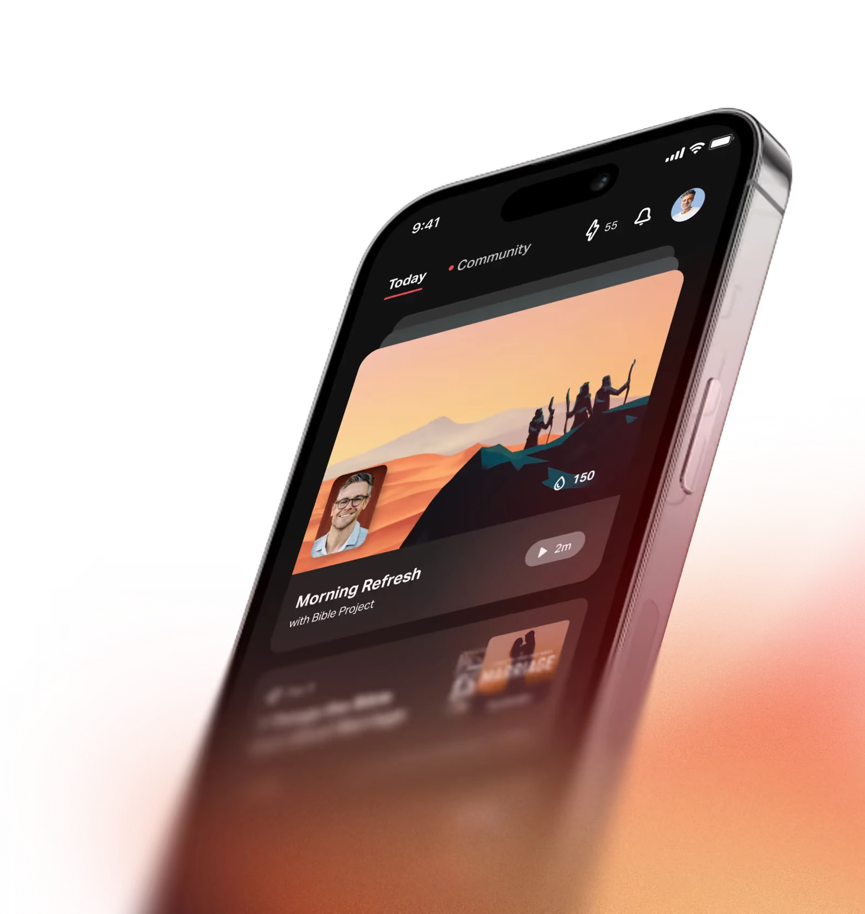

The Most Downloaded and Used Bible App in the World
Built to help people create daily spiritual rhythms, the Bible App brings Scripture to life on any device, in thousands of languages. All completely free.Whether it’s a verse before school, a devotional with friends, or a shared prayer in a church group, this is more than an app. It’s a community of people staying connected to God through His Word.